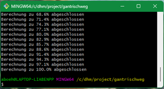
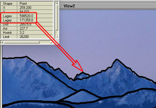
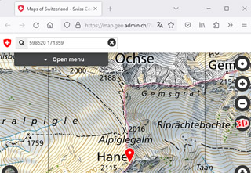

skyplot2pano – Dokumentation
Adrian Böhlen
Version 1.0 vom 16.03.2024
Inhalt
0 Einleitung und Zweck
skyplot2pano ist eine kommandozeilen-orientierte Anwendung, geschrieben in der Programmiersprache Awk , die sich die Funktion von SCOP.SKYPLOT zunutze macht, um Panorama-Ansichten mit Silhouetten zu berechnen sowie Sichtbarkeitsparameter abzuleiten. SCOP.SKYPLOT ist ein kleines Zusatzprogramm des Programmsystems SCOP der Technischen Universität (TU) Wien.
Aus jeder Berechnung mit skyplot2pano resultieren zwei Textdateien: Die prot-Datei ist das Berechnungsprotokoll, welches die angegebenen Argumente und verschiedene abgeleitete Informationen auflistet. Die sil-Datei ist eine kommagetrennte Textdatei, die mit einem Geographischen Informationssystem (GIS; z.B. ArcView, ArcGIS, QGIS...) unter Verwendung der Felder X und Y visualisiert werden kann. Zu jedem Punkt werden die Lagekoordinaten gespeichert, anhand derer es z.B. möglich ist, unbekannte Gipfel eindeutig zu identifizieren. Ebenso lässt sich die Distanz jedes Punktes abfragen. Zur Symbolisierung kann das Feld DiRel verwendet werden. Damit werden die Punkte in 8 – 10 Klassen aufgeteilt, wobei die nächstgelegenen den Wert 0, die am weitesten entfernten die Werte 7, 8 oder 9 erhalten. Auf diese Weise ist es möglich, nahe gelegene Geländeformen mit grösseren Punkten darzustellen als weiter entfernte und so ein realistischer Landschaftseindruck erzielen.
1 Funktionsprinzip
1.1 Funktionalität von SCOP.SKYPLOT
Folgende Beschreibung der zugrundeliegenden Applikation ist dem Benutzerhandbuch entnommen:
In diesem Programm ist eine Lösung für die Aufgabe realisiert, aus einem Digitalen Geländemodell für einen vorgegebenen Standpunkt die Sichtbegrenzung durch die Topographie abzuleiten. Diese Problemstellung ist unter anderem in Zusammenhang mit GPS-Messungen von Bedeutung, weil damit Aussagen über die Abschattung von Satelliten getroffen werden können.
Die Ergebnisse der Berechnung werden entweder graphisch ausgegeben (Skyplot-Darstellungen) oder in numerischer Form (Datei) gespeichert.
Der Berechnung liegt ein einfacher Algorithmus zugrunde. Über den Vollkreis werden von einem vorgegebenen Standpunkt aus Profile in einem konstanten Winkelabstand gerechnet und an diese Profile jeweils die Tangente gelegt. Für jedes Profil gibt es einen Berührungspunkt zwischen Profil und Tangente, der an der Sichtbarkeitsgrenze liegt und durch seinen Abstand und Höhenunterschied vom Standpunkt beschrieben werden kann.
Durch Umrechnung in den Höhenwinkel wird die benötigte Information für die Skyplot-Darstellung gewonnen. […] Ausgegeben wird neben der tabellarischen Zusammenfassung der wichtigsten Werte eine Liste mit den Spalten Azimut, Höhenwinkel der Sichtbarkeitsgrenze und Entfernung des Grenzpunktes der Sichtbarkeit.
1.2 Ausgabe von SCOP.SKYPLOT
Relevant für die vorliegende Anwendung ist die zuletzt genannte Ausgabe. Diese ist wie folgt aufgebaut:
SKYPLOT: Extrempunkte
Date: 24.02.2024
Coordinates: 610558.00 197236.00 635.00
Model Height: 627.74
DTM File: sky.rdh
Limits: 480002.50 75002.50 810558.00 296977.50
Calculated Sector: 200.00..249.00 Grades
Angular Resolution: .10 Grades
Elevation Angles: Grades
200.0000 2.6143 38175.00
200.1000 2.5715 38150.00
200.2000 2.5672 26375.00
200.3000 2.5601 26375.00
200.4000 2.5798 26375.00
200.5000 2.6364 26250.00
etc.
Tab. 1: Output von SCOP.SKYPLOT (Auszug) mit Header und ersten Datenzeilen.
Ausgehend vom angegebenen Sektor (hier 200 – 249 gon) wird in der definierten azimutalen Auflösung (hier 0.1 gon) für jedes Azimut eine Berechnung durchgeführt und das Ergebnis in den drei oben genannten Spalten aufgelistet. Dabei bilden die ersten 8 Zeichen das Azimut, die nächsten 8 den Höhenwinkel und die letzten 10 Zeichen die Entfernung des Grenzpunktes der Sichtbarkeit. Die Winkeleinheit ist aus dem Header ersichtlich, standardmässig werden Grades, d.h. die Einheit gon (Neugrad) verwendet.
1.3 Auswertung der Daten für die Verortung der Punkte
1.3.1 Bestimmung der Lagekoordinaten
Hinter diesen drei Werten steckt wesentlich mehr, als man zunächst erwarten würde. Zusammen mit den Koordinaten des Standorts von dem aus die Berechnung durchgeführt wird (genannt Projektionszentrum, im Header unter «Coordinates» aufgeführt), ist es möglich, von jedem der aufgelisteten Punkte die zugehörigen Lage- und Höhenkoordinaten abzuleiten.
Zunächst muss die horizontale Distanz ermittelt werden, die auch als mathematischer Horizont bezeichnet wird, d.h. die virtuelle Gerade die in rechtem Winkel zur Lotrichtung steht, der Richtung gegen den Erdmittelpunkt hin. Dies lässt sich als vertikales Dreieck veranschaulichen, mit den beiden Eckpunkten A (Projektionszentrum) und P (Grenzpunkt der Sichtbarkeit) wobei die Entfernung der beiden der Hypothenuse entspricht. Zusammen mit dem Höhenwinkel, der meist mit dem griechischen Zeichen β bezeichnet wird, lassen sich die übrigen Parameter trigonometrisch bestimmen (siehe Abb. 1).
Mit der Entfernung in der Ebene und dem Azimut (Winkel gegen Nord) lässt sich nunmehr ein Dreieck in der Horizontalen konstruieren und damit die Lagekoordinaten des betreffenden Punktes wiederum trigonometrisch ermitteln. Je nachdem, in welcher Richtung – bezogen auf das Projektionszentrum – der Zielpunkt liegt, muss dabei unterschiedlich gerechnet werden. Abb. 2 zeigt zwei mögliche Konstellationen, wobei die Koordinaten des entfernten Punktes jeweils mit xE und yE gekennzeichnet sind. In skyplot2pano wird der Vollkreis hierzu in insgesamt 8 Sektoren zu je 50 gon unterteilt.

Abb. 1: Ableitung der horizontalen Distanz (Dreiecksseite a) aus Höhenwinkel β und Entfernung (Dreiecksseite c).
Eigene Zeichnung vom 02.03.2024

Abb. 2: Bestimmung der Lagekoordinaten eines Punktes (P; xE/yE) aus Standortkoordinaten (A; x/y), Azimut (α) und Entfernung (c).
Eigene Zeichnung vom 15.03.2024
Um die Höhe des Zielpunktes zu bestimmen genügt es nun nicht, wie man aus Abb. 1 vermuten könnte, einfach die Seitenlänge b des vertikalen Dreiecks zur Höhe des Standortes zu addieren (oder bei einem negativen Höhenwinkel zu subtrahieren), sondern es muss zusätzlich der Einfluss der Erdkrümmung und der atmosphärischen Refraktion mitberücksichtigt werden, da ansonsten grobe Fehler resultieren würden.
1.3.2 Erdkrümmung und Refraktion
Auch die höchsten Gipfel sind mit zunehmender Distanz irgendwann nicht mehr sichtbar, selbst wenn die Luft extrem klar ist und keine vorgelagerten Erhebungen die Sicht beeinträchtigen, weil sie aufgrund der Erdkrümmung früher oder später hinter dem Horizont verschwinden. Major Robert Reber, Ingenieur des Eidgenössischen Topographischen Bureaus formulierte es in seinem Aufsatz «Über Erdkrümmung und Refraktion» so: Die Erdkrümmung wirkt immer in einem negativen, d. h. für die Sichtbarkeit nachteiligen Sinne.
Dieser Parameter nimmt mit dem Quadrat der Entfernung zu. Ist der Effekt bei nahe gelegenen Objekten noch gering, so macht er sich mit zunehmender Distanz immer stärker bemerkbar. Für die Berechnung liegen verschiedene Formeln vor, die normalerweise die Erde als Kugel vereinfachen und daher von einem mittleren Radius ausgehen. Da die Erde aber in Wirklichkeit keine exakte Kugel, sondern durch die Rotation abgeplattet ist, hängt der genaue Radius vom Breitengrad ab. Für die Schweiz und die umliegenden Gebiete ergeben sich folgende Werte:
Koordinaten LV03 geographische
Stadt X / Y Koordinaten: Breite Erdradius
-----------------------------------------------------------------------
Freiburg 630060 / 316650 47° 59' 58" / 48.000° 6366.372 km
Basel 611569 / 266195 47° 32' 47" / 47.546° 6366.540 km
Bern 600000 / 200000 46° 57' 03" / 46.951° 6366.762 km
Lugano 716800 / 95984 46° 00' 19" / 46.005° 6367.114 km
Milano 737000 / 36230 45° 27' 51" / 45.464° 6367.316 km
Tab. 2: Erdradius im Bereich einiger Städte der Schweiz und des angrenzenden Auslands.
Wie man sehen kann, sind die Unterschiede aber nur gering und für die Berechnung von Sichtweiten innerhalb weniger hundert Kilometern spielt es deshalb keine Rolle, welcher dieser Werte verwendet wird. Aus diesem Grund wird der Erdradius bei skyplot2pano gerundet als 6370 km angenommen, was dem Wert entspricht, den auch SCOP standardmässig verwendet.
Hätte die Erde wie z.B. der Mond keine Atmosphäre, so könnte man es damit belassen. Da der Sehstrahl, d.h. die optische Verbindung zwischen zwei Punkten, sich aber innerhalb der Luftschicht bewegt und vor allem bei grossen Distanzen durch verschieden dichte Luftschichten hindurch, muss noch ein weiterer Parameter berücksichtigt werden; die atmosphärische Refraktion. Diese bewirkt grob gesagt eine Krümmung der Lichtstrahlen gegen die Erdoberfläche hin, oder – nochmals Robert Reber zitierend: Für gewöhnlich wird daher die Refraktion in einem positiven, für die Sichtbarkeit günstigern Sinne wirken. Gewöhnlich deshalb, weil wir es hier nicht mit einem klar festzulegenden geometrischen Wert zu tun haben, sondern sich die Eigenschaften der Atmosphäre aufgrund des Wetters (Hoch- und Tiefdruckgebiete, Inversionen…) und der Temperatur ständig verändern und dadurch auch ihre Wirkung auf die sie durchdringenden Lichtstrahlen. Als mittlerer Refraktionskoeffizient hat sich seit Carl Friedrich Gauß um 1800 der Wert 0.13 bewährt, das entspricht 13 Prozent der Erdkrümmung.

Abb. 3: Durch die Erdkrümmung verursachte Absenkung des Punktes P, der gesehen vom niedrigeren Punkt A unter dem mathematischen Horizont liegt (negativer Höhenwinkel β).
Eigene Zeichnung vom 15.03.2024
Da auch die Refraktion mit dem Quadrat der Entfernung zunimmt, wird sie zumeist mit der Erdkrümmung gemeinsam berechnet, so auch in der vorliegenden Applikation. Um also die Höhe des Zielpunktes zu bestimmen, ist gemäss der Darstellung in Abb. 1 der ermittelte Wert für die Dreiecksseite b zu der Standorthöhe zu addieren (bzw. bei einem negativen Höhenwinkel davon abzuziehen) und anschliessend die durch Erdkrümmung und Refraktion verursachte Absenkung zu addieren. So können selbst Punkte, die unter dem mathematischen Horizont liegen (negativer Höhenwinkel) in Wirklichkeit höher als der Standort gelegen sein. Abb. 3 zeigt im Seitenriss (stark übertrieben) eine solche Konstellation: Obwohl Punkt P deutlich höher als Punkt A ist, erscheint er von diesem aus betrachtet nur knapp über dem natürlichen und deutlich unter dem mathematischen Horizont.
1.3.3 Topographische Extrempunkte
In der Protokolldatei von skyplot2pano werden die so genannten Extrempunkte aufgeführt und in dieser Tabelle wird auch die zuvor erläuterte Absenkung durch Erdkrümmung und Refraktion ausgewiesen, wie hier am Beispiel des Hohlohturms (Koordinaten LV03: 671940 / 396034 / 1012) ersichtlich ist:
Extrempunkt X Y Z D [km] Azi [gon] E-R [m] dH [m]
--------------------------------------------------------------------
Noerdlichster: 687535 576841 479 181.5 5.478 2249.6 -532
Oestlichster: 800997 415333 711 130.5 90.550 1163.0 -300
Suedlichster: 649006 153418 3944 243.7 206.000 4055.7 2932
Westlichster: 555173 494261 687 152.6 344.524 1590.2 -324
Entferntester: 640238 154256 4005 243.8 208.300 4060.6 2993
Tab. 3: Liste der Extrempunkte für den Standort Hohlohturm (Schwarzwald).
Erläuterungen:
- X / Y / Z: Lage und Höhenkoordinaten im gleichen rechtwinkligen Koordinatensystem wie das definierte Projektionszentrum (hier LV03 und Meter über Meer)
- D: Distanz zu diesem Punkt in km
- Azi: Azimutaler Winkel zu diesem Punkt in gon. Es gilt: Norden 0 gon, Osten 100 gon, Süden 200 gon, Westen 300 gon
- E-R: Absenkung durch Erdkrümmung und Refraktion in m
- dH: Höhendifferenz gegenüber dem Projektionszentrum. Negative Werte kennzeichnen niedrigere, positive Werte höher gelegene Punkte
1.4 Auswertung der Daten für die Panoramadarstellung
1.4.1 Einleitung
Im vorherigen Kapitel wurde aufgezeigt, wie die Ausgabe von SCOP.SKYPLOT genutzt werden kann, um die Lage- und Höhenkoordinaten der betreffenden Punkte zu ermitteln. Diese Werte lassen sich aber noch in einer anderen Art auswerten, indem damit eine Panorama-Ansicht berechnet wird. Es muss dazu eine Bildgrösse festgelegt und anschliessend die einzelnen Punkte in Koordinaten dieses Bildkoordinatensystems umgerechnet werden.
1.4.2 Die Geometrie eines Panoramas
Ein Panorama, welches über die gesamte Länge das Landschaftsbild ohne Verzerrungen wiedergibt, wird durch eine Zylinderprojektion erreicht. Dazu stelle man sich vor, in der Mitte eines durchsichtigen Zylinders zu sitzen, dessen Radius dem ausgestreckten Arm entspricht. Auf diese Weise lassen sich die Konturen der Landschaft jenseits des Zylinders zeichnerisch festhalten und anschliessend das Ergebnis in Form eines langen Streifens abrollen. Egal wie lange dieser ist, das Bild bleibt verzerrungsfrei.
1.4.3 Berechnung des Panoramas
Die wichtigste Zusatzinformation hierfür ist die Bildbreite, welche als 9. Argument festgelegt werden muss. Mit dieser Angabe, sowie dem Öffnungswinkel (7. und 8. Argument) lässt sich sowohl die Ausdehnung eines gon im Bildkoordinatensystem berechnen als auch der Radius des Projektionszylinders. Dieser kann am ehesten mit der Brennweite eines Objektivs vergleichen werden, d.h. je grösser dieser Wert ist, desto grösser (und meist auch genauer) werden Details wiedergegeben.

Abb. 4: Bestimmung der Höhe (h) über dem mathematischen Horizont (mH) im Bildkoordinatensystem zwecks Festlegung der Punkte, welche die Konturen der Landschaft wiedergeben.
Eigene Zeichnung vom 07.03.2024
Im Gegensatz zu einer «echten» Zylinderprojektion liegt der so genannte Hauptpunkt (Bildkoordinaten 0 / 0) hier nicht in der Bildmitte, sondern am linken Bildrand. Ausgehend von der Information, wie vielen Millimetern ein gon im Bildkoordinatensystem entspricht, wird nun ein Punkt nach dem anderen berechnet, wobei der Horizontalabstand der einzelnen Punkte (Abstand auf der X-Achse des Bildkoordinatensystems) immer genau gleich ist und der in Millimetern umgerechneten azimutalen Auflösung (6. Argument) entspricht. Der vertikale Abstand vom mathematischen Horizont (Y-Koordinate im Bildkoordinatensystem) wird trigonometrisch errechnet, indem der Radius des Projektionszylinders als Ankathete in einem rechtwinkligen Dreieck angenommen und mit dem Tangens des Höhenwinkels multipliziert wird. Abb. 4 erläutert die Zusammenhänge. Das ist wie wenn der virtuelle Panoramazeichner – um zum vorherigen Beispiel zurückzukehren – der dahinterliegenden Landschaft entsprechend, in regelmässigem Abstand einen Punkt auf den Zylinder zeichnen würde. Wie im ersten Teil erläutert, lassen sich mittels der verfügbaren Informationen die Lagekoordinaten ermitteln und so erhält jeder Punkt seine reale X- und Y-Koordinate als Zusatzinformation, sodass diese später im Panoramabild abgefragt werden können. Zusammen mit einigen weiteren Angaben präsentiert sich die resultierende sil-Datei am Schluss wie folgt:
X, Y, LageX, LageY, Dist, Azi, HWink, Limit, DiRel
0.000, 58.123, 603397.0, 172588.0, 25700.0, 218.0, 3.2, 25000, 6
1.818, 58.287, 603344.0, 172551.0, 25750.0, 218.1, 3.2, 25000, 6
3.636, 58.564, 603299.0, 172539.0, 25775.0, 218.2, 3.2, 25000, 6
5.455, 59.115, 603253.0, 172527.0, 25800.0, 218.3, 3.2, 25000, 6
7.273, 59.844, 603214.0, 172539.0, 25800.0, 218.4, 3.3, 25000, 6
9.091, 61.354, 603190.0, 172600.0, 25750.0, 218.5, 3.4, 25000, 6
10.909, 62.493, 603159.0, 172637.0, 25725.0, 218.6, 3.4, 25000, 6
12.727, 62.231, 603121.0, 172648.0, 25725.0, 218.7, 3.4, 25000, 6
14.545, 62.679, 603082.0, 172661.0, 25725.0, 218.8, 3.4, 25000, 6
16.364, 62.163, 603043.0, 172672.0, 25725.0, 218.9, 3.4, 25000, 6
Tab. 4: Output von skyplot2pano (Auszug). Kommagetrennte Textdatei für die Darstellung von aus Punkten gebildeter Silhouetten.
1.4.4 Realisierung von sichtbegrenzenden Kreten (Silhouetten)
So umgesetzt und mit einer einzigen SKYPLOT-Berechnung als Grundlage würde allerdings lediglich eine aus Punkten gebildete Linie resultieren – der natürliche Horizont. Um auch vorgelagerte Strukturen abzubilden, greift skyplot2pano zu einem Trick:
Wie dem Handbuch zu SCOP.SKYPLOT zu entnehmen ist, kann über den Parameter LIMITS ein beliebiger, durch zwei Koordinatenpaare fesgelegter Ausschnitt des Höhenmodells zur Berechnung verwendet werden. Auf diese Weise lassen sich auch nahe gelegene Erhebungen als natürlicher Horizont erzwingen. Diese Methode hat allerdings den Nachteil, dass dort, wo es keine Erhebungen im betreffenden Höhenmodell-Ausschnitt gibt, das System automatisch den Rand desselben als Sichtbegrenzung zurückliefert. Es ist daher notwendig, solche Punkte mathematisch zu ermitteln und deren Ausgabe in die Zieldatei zu unterdrücken.

Abb. 5: Ausgabe während der Berechnung von skyplot2pano
Eigener Screenshot vom 04.03.2024
Über das 12. Argument (Aufloes-Dist) wird festgelegt, in welchem Abstand der für die Berechnung verwendete Höhenmodell-Perimeter sukzessive erweitert werden soll, ausgehend von der minimalen Distanz (10. Argument), bis die maximale Distanz (11. Argument) erreicht ist. Es ist vermutlich einleuchtend, dass bei einer feinen Abstufung und dies über einen grossen Distanzbereich hinweg, eine Vielzahl einzelner Berechnungen vonnöten sind, was dann entsprechend viel Zeit in Anspruch nimmt. Der Stand der Arbeiten wird fortwährend im Kommandofenster ausgewiesen (siehe Abb. 5), wobei die Prozentwerte lediglich anhand der Anzahl Berechnungen ermittelt werden. Da der zu berücksichtigende Teil des Höhenmodells mit fortlaufender Prozessdauer immer grösser wird, dauern auch die einzelnen Berechnungen kontinuierlich länger. Somit ist nach 50% zwar die Hälfte der Berechnungen durchgeführt, aber noch längst nicht die Hälfte der insgesamt erforderlichen Zeit verstrichen.

Abb. 6: Vereinfachte Darstellung von 4 aufeinander folgenden Berechnungen mit einem abstrahierten Geländemodell.
Eigene Zeichnung vom 07.03.2024
Das Funktionsprinzip ist nebenstehend in Abb. 6 erläutert: Ausgehend vom Projektionszentrum (A) wird bei einer minimalen Distanz von 0 km im Abstand, der im 12. Argument (Aufloes-Dist) fesgelegt ist, der Höhenmodell-Perimeter fortlaufend erweitert. Die nahe gelegene Erhebung 1 ist somit im ersten Durchgang (a) horizontbildend und wird als Treffer in die Ausgabedatei geschrieben. Im zweiten Durchgang (b) ist das immer noch der Fall, das System kennt diesen Punkt jedoch bereits und verwirft ihn wieder. Neu ist aber die Erhebung 2 horizontbildend, nicht jedoch der Abhang der Erhebung 4, der als Rand des Perimeters erkannt und verworfen wird. Im dritten Durchgang (c) werden die Erhebungen 3 und 4 detektiert und im vierten (d) die Erhebung 6. Die Erhebung 5 erscheint hingegen nicht in der Ausgabedatei, da sie von der Krete der Erhebungen 3 und 4 verdeckt wird.
Alternativ kann eine minimale Distanz definiert werden, die grösser als 0 ist und in diesem Fall beispielsweise der Entfernung des Perimeters c entsprechen kann. Auch dann wird die Erhebung 5 aber nicht abgebildet, da der Nahbereich in diesem Fall nicht einfach ignoriert wird. Lediglich Erhebungen, die in dieser Konstellation nicht horizontbildend sind, werden dann nicht abgebildet, hier also die Erhebungen 1 und 2.
2 Benutzung
2.1 Voraussetzungen
Folgende Voraussetzungen müssen erfüllt sein, damit skyplot2pano verwendet werden kann:
- Die direkt ausführbare Quelltextdatei skyplot2pano.awk muss von https://github.com/ABoehlen/skyplot2pano heruntergeladen werden.
- skyplot2pano ist in der Programmiersprache Awk geschrieben, nutzt jedoch auch UNIX-Kommandos . Es kann daher nur in einer Umgebung ausgeführt werden, die diese Befehle versteht, also z.B. einem beliebigen Linux-System, oder unter Windows innerhalb Emulatoren wie Git for Windows oder Cygwin.
- Das Programmsystem SCOP der TU Wien wird nicht benötigt, jedoch das Zusatzprogramm skyplot.exe, welches genau aus dieser einzelnen exe-Datei besteht. Der Speicherort muss in die Umgebungsvariable PATH aufgenommen worden sein. Idealerweise wird skyplot2pano.awk am gleichen Ort abgelegt.
- Es wird zumindest ein Höhenmodell im Format SCOP RDH benötigt (*.dtm oder *.rdh Datei). Dieses hybride Höhenmodellformat kann vermutlich nur mit SCOP++ aus verschiedenen gängigen Höhenmodell-Formaten (z.B. ESRI ASCII GRID) erzeugt werden. GIS-Applikationen wie ESRI ArcGIS oder Safe FME unterstützen das Format nicht.
- Der Speicherort der verwendeten Höhenmodelle muss in der Funktion dhmKopieren festgelegt werden.
- Die Aufrufparameter der verwendeten Höhenmodelle sind in der Funktion dhmBeschreibung festzulegen.
2.2 Aufruf über die Kommandozeile
Im einfachsten Fall wird skyplot2pano einfach über die Kommandozeile aus einem beliebigen Dateiverzeichnis heraus aufgerufen. Ohne Argumente erscheint eine Übersicht, wie die Parametrisierung zu erfolgen hat. Die Werte für die insgesamt 12 Argumente müssen durch je einen Leerschlag getrennt werden und dürfen selber keine Leerzeichen enthalten. Sind die Werte gültig, beginnt das Programm zu laufen, wobei der Fortschritt ausgegeben wird, wie bereits erwähnt wurde (siehe Abb. 5). Sobald der Prozess beendet ist, befinden sich im Verzeichnis, aus dem der Aufruf erfolgte, zwei neue Dateien:
- prot_Name_AziLi-AziRe.txt (z.B. prot_Gantrischweg_218-240.txt). Dies ist das Berechungsprotokoll mit den eingegebenen Werten, daraus abgeleiteten Werten sowie den topographischen Extrempunkten (siehe Kapitel 1.3).
- sil_Name_AziLi-AziRe.txt (z.B. sil_Gantrischweg_218-240.txt). Dies ist die kommagetrennte Textdatei für die Darstellung von aus Punkten gebildeten Silhouetten (siehe Kapitel 1.4).
2.3 Aufruf über einen Batch
Besser als der direkte Aufruf ist die Parametrisierung über einen Batch. Hierzu ist lediglich eine Textdatei nötig, welche einen kompletten Aufruf enthält. Damit das System diese Datei als Batch erkennt, ist es sinnvoll, in der ersten Zeile den Interpreter zu spezifizieren:
#!/bin/bash
Meist funktioniert es aber auch ohne, vorausgesetzt auf der Datei ist das Ausführungsrecht gesetzt. Auf diese Weise kann dieselbe Berechnung mehrmals ausgeführt werden, oder einzelne Parameter können gezielt verändert werden, ohne jedesmal alles neu eintippen zu müssen.
2.4 Auslagerung auf eine RAM-Disk
Wie im Abschnitt 1.4.4 aufgeführt, beinhaltet ein skyplot2pano-Prozess meist eine Vielzahl einzelner Berechnungen. Dabei werden innert kürzester Zeit dutzende Dateien angelegt, ausgewertet und wieder gelöscht. Aus diesem Grund ist es sinnvoll, die Berechnung auf ein virtuelles Laufwerk, eine so genannte RAM-Disk auszulagern. Dabei wird ein Teil des Memorys (RAM) dauerhaft einem virtuellen Laufwerk zugewiesen, welches dann zur Laufzeit wie ein normales Laufwerk verwendet werden kann. Da alles innerhalb des RAM geschieht, sind viele Prozesse auf diese Weise wesentlich schneller als auf einem «richtigen» Laufwerk.
Um eine solche RAM-Disk einzurichten, ist eine entsprechende Zusatzapplikation nötig. Zu diesem Zweck gibt es verschiedene Produkte, auch kostenlose, weshalb hier auf eine Empfehlung verzichtet wird. Beim Einrichten muss man sich genau überlegen, wieviel Speicher man für das virtuelle Laufwerk «opfern» will. Möglichst viel ist natürlich in Hinblick auf grosse Höhenmodell-Dateien sinnvoll, allerdings steht dieser Speicher dann für das normale RAM nicht mehr zur Verfügung, weshalb hier eine Güterabwägung vorzunehmen ist. Hat man sich völlig vertan, kann das virtuelle Laufwerk auch einfach wieder gelöscht und nochmals von vorne begonnen werden.
Um die Berechnung im virtuellen Laufwerk ausführen zu lassen, ist ebenfalls ein Batch erforderlich, der aber einige Zeilen mehr enthält, als der zuvor genannte. Nachstehend ein mögliches Beispiel:
#!/bin/bash
dir=$(pwd)
cd /d
skyplot2pano.awk 610558 197236 635 Gantrischweg alti25 0.1 218 240 400 5 40 1
mv prot_* $dir
mv sil_* $dir
Nach der Kennzeichnung des Interpreters (bash) in der ersten Zeile wird das aktuelle Verzeichnis der Variable dir zugewiesen. Danach wird in das virtuelle Laufwerk gewechselt, welches hier über /d angesprochen wird. Anschliessend wird dort die Berechnung vorgenommen und zum Schluss die beiden resultierenden Dateien wieder ins ursprüngliche Verzeichnis geschoben, dessen Pfad ja in der Variable dir gespeichert wurde.
2.5 Anwendungsbeispiele
2.5.1 Panorama-Ansicht visualisieren
Die kommagetrennte Ausgabedatei lässt sich problemlos in einem Geographischen Informationssystem visualisieren. Die genaue Handhabung ist bei jedem System etwas anders, weshalb darauf nicht eingegangen wird. Für die nachstehenden Beispiele wurde ESRI ArcView GIS 3.2a verwendet . Entscheidend ist die Zuweisung der richtigen Felder für die Darstellung der X- und Y-Koordinaten im Bildkoordinatensystem. Da diese bereits mit X und Y gekennzeichnet sind, sollten sie vom System normalerweise automatisch erkannt werden. Danach erscheinen die Punkte, welche die sichtbegrenzenden Kreten repräsentieren, in einer Einheitsgrösse im Kartenfenster. Mit dem Attribut DiRel (Distanz relativ) werden die Punkte je nach Konstellation in 8 – 10 Klassen unterteilt und lassen sich daher mit unterschiedlichen Grössen symbolisieren. So lässt sich ein realistischer Landschaftseindruck erzielen, indem nahe gelegene Formationen mit grossen, weit entfernte dagegen mit kleinen Punkten dargestellt werden. Bei einer hohen Punktdichte, wie sie bei einer sehr geringen azimutalen Auflösung resultiert, verschmelzen die Punkte zudem zu durchgehenden Linien.
2.5.2 Kombination mit einer Fotografie

Abb. 7: Überlagerung der Silhouettendarstellung mit einer Fotografie.
Eigener Screenshot aus ArcView vom 09.03.2024 unter Verwendung einer eigenen Aufnahme vom 13.12.2021
Durch Festlegung zweier möglichst weit auseinander liegender Passpunkte ist es ausserdem möglich, eine Fotografie, die vom gleichen Standort aus aufgenommen wurde, auf die berechnete Geometrie einzupassen. Allerdings muss man sich dabei bewusst sein, dass eine gewöhnliche Kamera natürlich nicht mit einer Zylinderprojektion arbeitet, sondern das Bild durch das Objektiv auf eine Ebene (Sensor) projiziert wird. Je nach verwendeter Brennweite resultieren so mehr oder weniger verzerrte Aufnahmen, die dann entsprechend schlecht zu der korrekten Geometrie der Punkte passen. Dies ist besonders bei Handyaufnahmen der Fall, da die dort eingebauten Kameras nur eine sehr geringe Brennweite aufweisen. Bessere Ergebnisse gelingen mit Bildern, die mit einer Spiegelreflexkamera aufgenommen wurden. Abb. 7 zeigt ein Beispiel. Hier kam eine mittlere Teleoptik von 110 mm zum Einsatz, was eine verzerrungsarme Geometrie ermöglicht.
2.5.3 Lage der Punkte bestimmen
Wie bereits erwähnt, werden zu jedem Punkt die zugehörigen Lagekoordinaten berechnet. Mit einem entsprechenden Werkzeug (Identify o.ä.) lassen sie sich dann problemlos abfragen und z.B. mittels eines Geoportals verorten. Die Abbildungen 8 und 9 zeigen ein Beispiel unter Verwendung von https://map.geo.admin.ch. Dort lassen sich Koordinatenpaare einfach ins Suchfeld eintippen, worauf die Ansicht zur entsprechenden Stelle springt. In diesem Beispiel handelt es sich bei dem hinter dem Gemsgrat aufragenden Gipfel mit den LV03-Koordinaten 598520 / 171359 demnach um den 2115 m hohen Hane.

Abb. 8: Abfragen eines Punktes mit Anzeige der Lagekoordinaten.
Eigener Screenshot aus ArcView vom 09.03.2024

Abb. 9: Lokalisierung dieses Punktes anhand der Lagekoordinaten im Geoportal map.geo.admin.ch
Eigener Screenshot aus Firefox vom 09.03.2024
2.5.4 Anzeige im Grundriss

Abb. 10: Anzeige der Silhouetten im Grundriss
Eigener Screenshot aus ArcView vom 10.03.2024
Nebst der Panorama-Ansicht, welche einem Seitenriss entspricht, ist es auch möglich, sich die berechnete Datei im Grundriss anzeigen zu lassen. Das Vorgehen ist grundsätzlich identisch, mit dem Unterschied dass beim Import ins GIS als Quelle für die X-Achse im Bildkoordinatensystem das Attribut LageX und für die Y-Achse das Feld LageY festgelegt werden muss. Mit einer passenden Karte im Hintergrund lassen sich die Punkte dann gut visualisieren, allerdings darf man nicht etwa erwarten, eine Art Sichtbarkeitskarte zu erhalten. Dies ist mit der Methode, mit der SCOP.SKYPLOT arbeitet nicht möglich, da damit keine Flächen, sondern nur sichtbegrenzende Kreten erfasst werden. Wie Abb. 10 zeigt, lässt sich die Auflösung des verwendeten Höhenmodells auf diese Weise gut erkennen, da sie dem Abstand zwischen den sichtbegrenzenden Punkten in Bezug auf das Projektionszentrum entspricht; im vorliegenden Fall 25 m.
Anmerkungen, Literatur und Quellen
Da das Handbuch zu SCOP.SKYPLOT diesbezüglich keine Angaben macht, ist anzunehmen, dass dieser Wert dort ebenso gilt.